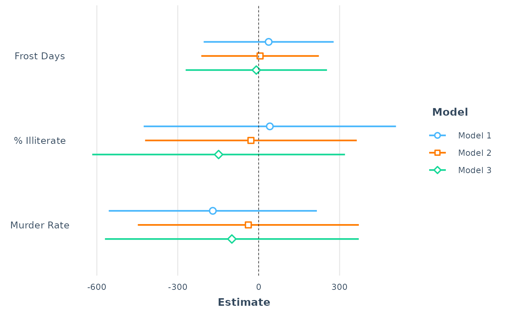

plot_summs and plot_coefs create regression coefficient
plots with ggplot2.
Usage
plot_summs(
...,
ci_level = 0.95,
model.names = NULL,
coefs = NULL,
omit.coefs = "(Intercept)",
inner_ci_level = NULL,
colors = "CUD Bright",
plot.distributions = FALSE,
rescale.distributions = FALSE,
exp = FALSE,
point.shape = TRUE,
point.size = 5,
line.size = c(0.8, 2),
legend.title = "Model",
groups = NULL,
facet.rows = NULL,
facet.cols = NULL,
facet.label.pos = "top",
color.class = colors,
resp = NULL,
dpar = NULL,
coefs.match = c("exact", "regex")
)
plot_coefs(
...,
ci_level = 0.95,
inner_ci_level = NULL,
model.names = NULL,
coefs = NULL,
omit.coefs = c("(Intercept)", "Intercept"),
colors = "CUD Bright",
plot.distributions = FALSE,
rescale.distributions = FALSE,
exp = FALSE,
point.shape = TRUE,
point.size = 5,
line.size = c(0.8, 2),
legend.title = "Model",
groups = NULL,
facet.rows = NULL,
facet.cols = NULL,
facet.label.pos = "top",
color.class = colors,
resp = NULL,
dpar = NULL,
coefs.match = c("exact", "regex")
)Arguments
- ...
regression model(s). You may also include arguments to be passed to
tidy().- ci_level
The desired width of confidence intervals for the coefficients. Default: 0.95
- model.names
If plotting multiple models simultaneously, you can provide a vector of names here. If NULL, they will be named sequentially as "Model 1", "Model 2", and so on. Default: NULL
- coefs
If you'd like to include only certain coefficients, provide them as a vector. If it is a named vector, then the names will be used in place of the variable names. See details for examples. Default: NULL
- omit.coefs
If you'd like to specify some coefficients to not include in the plot, provide them as a vector. This argument is overridden by
coefsif both are provided. By default, the intercept term is omitted. To include the intercept term, just set omit.coefs to NULL.- inner_ci_level
Plot a thicker line representing some narrower span than
ci_level. Default is NULL, but good options are .9, .8, or .5.- colors
See jtools_colors for more on your color options. Default: 'CUD Bright'
- plot.distributions
Instead of just plotting the ranges, you may plot normal distributions representing the width of each estimate. Note that these are completely theoretical and not based on a bootstrapping or MCMC procedure, even if the source model was fit that way. Default is FALSE.
- rescale.distributions
If
plot.distributionsis TRUE, the default behavior is to plot each normal density curve on the same scale. If some of the uncertainty intervals are much wider/narrower than others, that means the wide ones will have such a low height that you won't be able to see the curve. If you set this parameter to TRUE, each curve will have the same maximum height regardless of their width.- exp
If TRUE, all coefficients are exponentiated (e.g., transforms logit coefficents from log odds scale to odds). The reference line is also moved to 1 instead of 0.
- point.shape
When using multiple models, should each model's point estimates use a different point shape to visually differentiate each model from the others? Default is TRUE. You may also pass a vector of shapes to specify shapes yourself.
- point.size
Change the size of the points. Default is 3.
- line.size
Change the thickness of the error bar lines. Default is
c(0.8, 2). The first number is the size for the full width of the interval, the second number is used for the thicker inner interval wheninner.ciisTRUE.- legend.title
What should the title for the legend be? Default is "Model", but you can specify it here since it is rather difficult to change later via
ggplot2's typical methods.- groups
If you would like to have facets (i.e., separate panes) for different groups of coefficients, you can specify those groups with a list here. See details for more on how to do this.
- facet.rows
The number of rows in the facet grid (the
nrowargument toggplot2::facet_wrap()).- facet.cols
The number of columns in the facet grid (the
nrowargument toggplot2::facet_wrap()).- facet.label.pos
Where to put the facet labels. One of "top" (the default), "bottom", "left", or "right".
- color.class
Deprecated. Now known as
colors.- resp
For any models that are
brmsfitand have multiple response variables, specify them with a vector here. If the model list includes other types of models, you do not need to enterrespfor those models. For instance, if I want to plot almobject and twobrmsfitobjects, you only need to provide a vector of length 2 forresp.- dpar
For any models that are
brmsfitand have a distributional dependent variable, that can be specified here. If NULL, it is assumed you want coefficients for the location/mean parameter, not the distributional parameter(s).- coefs.match
This modifies the way the
coefsandomit.coefsarguments are interpreted. The default"exact"which represents the legacy behavior, will include/exclude coefficients that match exactly with your inputs to those functions. If"regex",coefsandomit.coefsare used as thepatternargument forgrepl()matching the coefficient names. Note that using"regex"means you will be unable to override the default coefficient names via a named vector.
Details
A note on the distinction between plot_summs and plot_coefs:
plot_summs only accepts models supported by summ() and allows users
to take advantage of the standardization and robust standard error features
(among others as may be relevant). plot_coefs supports any models that
have a broom::tidy() method defined in the broom package, but of course
lacks any additional features like robust standard errors. To get a mix
of the two, you can pass summ objects to plot_coefs too.
For coefs, if you provide a named vector of coefficients, then
the plot will refer to the selected coefficients by the names of the
vector rather than the coefficient names. For instance, if I want to
include only the coefficients for the hp and mpg but have
the plot refer to them as "Horsepower" and "Miles/gallon", I'd provide
the argument like this:
c("Horsepower" = "hp", "Miles/gallon" = "mpg")
To use the groups argument, provide a (preferably named) list of
character vectors. If I want separate panes with "Frost" and "Illiteracy"
in one and "Population" and "Area" in the other, I'd make a list like
this:
list(pane_1 = c("Frost", "Illiteracy"), pane_2 = c("Population", "Area"))
Examples
states <- as.data.frame(state.x77)
fit1 <- lm(Income ~ Frost + Illiteracy + Murder +
Population + Area + `Life Exp` + `HS Grad`,
data = states, weights = runif(50, 0.1, 3))
fit2 <- lm(Income ~ Frost + Illiteracy + Murder +
Population + Area + `Life Exp` + `HS Grad`,
data = states, weights = runif(50, 0.1, 3))
fit3 <- lm(Income ~ Frost + Illiteracy + Murder +
Population + Area + `Life Exp` + `HS Grad`,
data = states, weights = runif(50, 0.1, 3))
# Plot all 3 regressions with custom predictor labels,
# standardized coefficients, and robust standard errors
plot_summs(fit1, fit2, fit3,
coefs = c("Frost Days" = "Frost", "% Illiterate" = "Illiteracy",
"Murder Rate" = "Murder"),
scale = TRUE, robust = TRUE)
